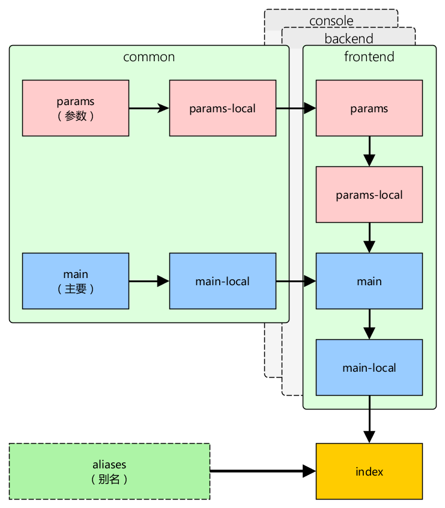

Advanced application template ¶
Note: This section is under development.
This template is for large projects developed in teams where the backend is divided from the frontend, application is deployed to multiple servers etc. This application template also goes a bit further regarding features and provides essential database, signup and password restore out of the box.
Installation ¶
Install via Composer ¶
If you do not have Composer, you may download it from http://getcomposer.org/ or run the following command on Linux/Unix/MacOS:
curl -sS http://getcomposer.org/installer | php
You can then install the application using the following command:
php composer.phar create-project --prefer-dist --stability=dev yiisoft/yii2-app-advanced /path/to/yii-application
Getting started ¶
After you install the application, you have to conduct the following steps to initialize the installed application. You only need to do these once for all.
Execute the
initcommand and selectdevas environment.php /path/to/yii-application/initOtherwise, in production execute
initin non-interactive mode.php /path/to/yii-application/init --env=Production overwrite=All- Create a new database and adjust the
components.dbconfiguration incommon/config/main-local.phpaccordingly. - Apply migrations with console command
yii migrate. - Set document roots of your web server:
- for frontend
/path/to/yii-application/frontend/web/and using the URLhttp://frontend/ - for backend
/path/to/yii-application/backend/web/and using the URLhttp://backend/
Directory structure ¶
The root directory contains the following subdirectories:
backend- backend web application.common- files common to all applications.console- console application.environments- environment configs.frontend- frontend web application.
Root directory contains a set of files.
.gitignorecontains a list of directories ignored by git version system. If you need something never get to your source code repository, add it there.composer.json- Composer config described in detail below.init- initialization script described in "Composer config described in detail below".init.bat- same for Windows.LICENSE.md- license info. Put your project license there. Especially when opensourcing.README.md- basic info about installing template. Consider replacing it with information about your project and its installation.requirements.php- Yii requirements checker.yii- console application bootstrap.yii.bat- same for Windows.
Predefined path aliases ¶
@yii- framework directory.@app- base path of currently running application.@common- common directory.@frontend- frontend web application directory.@backend- backend web application directory.@console- console directory.@runtime- runtime directory of currently running web application.@vendor- Composer vendor directory.@web- base URL of currently running web application.@webroot- web root directory of currently running web application.
The aliases specific to the directory structure of the advanced application
(@common, @frontend, @backend, and @console) are defined in common/config/aliases.php.
Applications ¶
There are three applications in advanced template: frontend, backend and console. Frontend is typically what is presented to end user, the project itself. Backend is admin panel, analytics and such functionality. Console is typically used for cron jobs and low-level server management. Also it's used during application deployment and handles migrations and assets.
There's also a common directory that contains files used by more than one application. For example, User model.
frontend and backend are both web applications and both contain the web directory. That's the webroot you should point your
web server to.
Each application has its own namespace and alias corresponding to its name. Same applies to common directory.
Configuration and environments ¶
There are multiple problems with a typical approach to configuration:
- Each team member has its own configuration options. Committing such config will affect other team members.
- Production database password and API keys should not end up in the repository.
- There are multiple server environments: development, testing, production. Each should have its own configuration.
- Defining all configuration options for each case is very repetitive and takes too much time to maintain.
In order to solve these issues Yii introduces a simple environments concept. Each environment is represented
by a set of files under the environments directory. The init command is used to switch between these. What it really does is
copy everything from the environment directory over to the root directory where all applications are.
Typically environment contains application bootstrap files such as index.php and config files suffixed with
-local.php. These are added to .gitignore and never added to source code repository.
In order to avoid duplication configurations are overriding each other. For example, the frontend reads configuration in the following order:
common/config/main.phpcommon/config/main-local.phpfrontend/config/main.phpfrontend/config/main-local.php
Parameters are read in the following order:
common/config/params.phpcommon/config/params-local.phpfrontend/config/params.phpfrontend/config/params-local.php
The later config file overrides the former.
Here's the full scheme:

Configuring Composer ¶
After the application template is installed it's a good idea to adjust default composer.json that can be found in the root
directory:
{
"name": "yiisoft/yii2-app-advanced",
"description": "Yii 2 Advanced Application Template",
"keywords": ["yii", "framework", "advanced", "application template"],
"homepage": "http://www.yiiframework.com/",
"type": "project",
"license": "BSD-3-Clause",
"support": {
"issues": "https://github.com/yiisoft/yii2/issues?state=open",
"forum": "http://www.yiiframework.com/forum/",
"wiki": "http://www.yiiframework.com/wiki/",
"irc": "irc://irc.freenode.net/yii",
"source": "https://github.com/yiisoft/yii2"
},
"minimum-stability": "dev",
"require": {
"php": ">=5.4.0",
"yiisoft/yii2": "*",
"yiisoft/yii2-swiftmailer": "*",
"yiisoft/yii2-bootstrap": "*",
"yiisoft/yii2-debug": "*",
"yiisoft/yii2-gii": "*"
},
"scripts": {
"post-create-project-cmd": [
"yii\\composer\\Installer::setPermission"
]
},
"extra": {
"writable": [
"backend/runtime",
"backend/web/assets",
"console/runtime",
"console/migrations",
"frontend/runtime",
"frontend/web/assets"
]
}
}
First we're updating basic information. Change name, description, keywords, homepage and support to match
your project.
Now the interesting part. You can add more packages your application needs to the require section.
All these packages are coming from packagist.org so feel free to browse the website for useful code.
After your composer.json is changed you can run php composer.phar update --prefer-dist, wait till packages are downloaded and
installed and then just use them. Autoloading of classes will be handled automatically.
Creating links from backend to frontend ¶
Often it's required to create links from the backend application to the frontend application. Since the frontend application may contain its own URL manager rules you need to duplicate that for the backend application by naming it differently:
return [
'components' => [
'urlManager' => [
// here is your normal backend url manager config
],
'urlManagerFrontend' => [
// here is your frontend URL manager config
],
],
];After it is done, you can get an URL pointing to frontend like the following:
echo Yii::$app->urlManagerFrontend->createUrl(...);